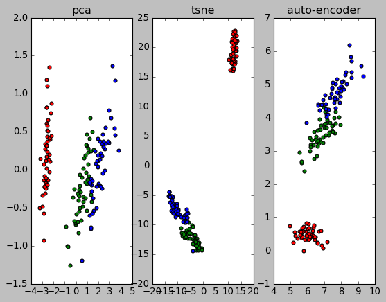

t-SNE
Table of Contents
1 t-SNE
1.1 SNE 与 t-SNE
t-SNE1 是一种非监督的数据降维算法, 其基本思想是, 把高维的 X 映射到低维的 Y, 期望任意两点, 在高维空间中的`距离`与低维空间中`距离`相近. 这里的`距离`并非欧氏距离, 而是基于欧氏距离的某种概率表示. t-SNE 使用用梯度下降的方法, 其损失函数为高维`距离`的分布与低维`距离`分布的 KL 散度.
t-SNE 以 SNE 为基础, SNE 算法的步骤:
- 假设样本数为 m, 计算一个 \(R^{m\times m}\) 的矩阵 P, 其中 \(P_{ji} =
\frac{\exp(-\frac{||X_i-X_j||^2}{2\delta^2})}{\sum{\exp{-\frac{||X_i-X_k||^2}{2\delta^2}}}}\)
\(P_{ji}\) 的样子与 softmax 很像, 与高斯分布的概率密度函数也有类似. 可以把 \(P\)
理解为
第 j 个点是第 i 个点的邻近点的概率, 服从高斯分布, 直观上看, \(x_i\) 与 \(x_j\) 的欧氏距离越小, 其概率越大. 所以 P 可以看作是另一种形式的`距离` - 定义一个 embedding, 即一张查找表, 这个表的大小为 \(R^{m\times n}\), 每个点 \(X_i\) 被映射为一个大小为 n 的向量 \(Y_i\), 表示 X 降维到 Y
- 计算另一个 \(R^{m\times m}\) 的矩阵 Q, 其中 \(Q_{ji} = \frac{\exp(-\frac{||Y_i-Y_j||^2}{2\delta^2})}{\sum{\exp{-\frac{||Y_i-Y_k||^2}{2\delta^2}}}}\)
- 计算 KL(P,Q) 做为损失函数. KL 即 KL divergence, 对于两个概率分布 p, q, \(KL(p,q)=\sum{p_i*\big(log(p_i)-log(q_i)\big)}\), KL 与 cross entropy 类似, 可以评价两个概率分布的相似性
- 对 KL(P,Q) 进行梯度下降, 需要被优化的参数是 embedding, 即 Y
t-SNE 是把 SNE 中 Q 的计算变为 \(Q_{ij}=\frac{(1+||Y_i-Y_j||^2)^{-1}}{\sum{(1+||Y_k-Y_i||^2)^{-1}}}\), 即由高斯分布变为 t 分布
1.2 实现
# https://github.com/cemoody/topicsne # 1. 计算 p distances = pairwise_distances(pos, metric=metric, squared=True) pij = manifold.t_sne._joint_probabilities(distances, perplexity, False) # 2. 计算 q 及 KL divergence class TSNE(nn.Module): def __init__(self, n_points, n_topics, n_dim): self.n_points = n_points self.n_dim = n_dim super(TSNE, self).__init__() self.logits = nn.Embedding(n_points, n_topics) def forward(self, pij, i, j): x = self.logits.weight dkl2 = pairwise(x) n_diagonal = dkl2.size()[0] part = (1 + dkl2).pow(-1.0).sum() - n_diagonal xi = self.logits(i) xj = self.logits(j) num = ((1. + (xi - xj)**2.0).sum(1)).pow(-1.0).squeeze() qij = num / part.expand_as(num) # Compute KL divergence loss_kld = pij * (torch.log(pij) - torch.log(qij)) return loss_kld.sum()
1.3 t-SNE 用途
t-SNE 的主要用途是高维数据的可视化, 因为它可以把高维数据映射到低维(例如 2 维), 而且能保持原来的 clustering 关系.
通常 t-SNE 也被认为是一种非线性的降维算法, 与 PCA, autoencoder 类似. 但 t-SNE 一般不能像 PCA, autoencoder 那样做为降维算法对监督学习的数据进行预处理2. 因为 t-SNE 学习到的是一个针对每个点的映射表(大小为 m*m*n), 并不知道如何把 X 的 k 的 feature 通过运算映射为 Y 的 n 的 feature (k*n). 对于没有见过的数据, t-SNE 无法处理.3
以 sklearn 的 TSNE 为例, 它只提供了 fit_transform 的 api, 并没有提供单独的 transform api, 原因同上 4
1.4 PCA, t-SNE and auto-encoder
from matplotlib import pyplot as plt from sklearn import datasets from sklearn.decomposition import PCA from sklearn.manifold import TSNE plt.style.use("classic") iris = datasets.load_iris() X = iris.data y = iris.target target_ids = range(len(iris.target_names)) # PCA pca = PCA(n_components=2, random_state=0) X_2d = pca.fit_transform(X) plt.subplot(131) plt.title("pca") colors = 'r', 'g', 'b', 'c', 'm', 'y', 'k', 'w', 'orange', 'purple' for i, c, label in zip(target_ids, colors, iris.target_names): plt.scatter(X_2d[y == i, 0], X_2d[y == i, 1], c=c, label=label) # TSNE tsne = TSNE(n_components=2, random_state=0) X_2d = tsne.fit_transform(X) colors = 'r', 'g', 'b', 'c', 'm', 'y', 'k', 'w', 'orange', 'purple' plt.subplot(132) plt.title("tsne") for i, c, label in zip(target_ids, colors, iris.target_names): plt.scatter(X_2d[y == i, 0], X_2d[y == i, 1], c=c, label=label) # autoencoder import torch from torch import nn from torch import optim from torch.utils.data import DataLoader, Dataset # ---------- data ---------- class PlainDataset(Dataset): def __init__(self): self.X = torch.from_numpy(X).float() self.Y = self.X def __getitem__(self, index): return self.X[index], self.Y[index] def __len__(self): return len(self.X) training_set = PlainDataset() training_loader = DataLoader(training_set, batch_size=30, shuffle=True) def train(): for i in range(5000): for x, y in training_loader: loss = criterion(model(x), y) optimizer.zero_grad() loss.backward() optimizer.step() # if i % 20 == 0: # print("epoch #%d: loss: %f" % (i, loss.item())) # ---------- model ---------- model = nn.Sequential(nn.Linear(4, 2), nn.ReLU(), nn.Linear(2, 4)) criterion = nn.MSELoss() optimizer = optim.Adam(model.parameters(), lr=1e-3, weight_decay=0.001) train() X_2d = model[0](torch.from_numpy(X).float()).detach().numpy() colors = 'r', 'g', 'b', 'c', 'm', 'y', 'k', 'w', 'orange', 'purple' plt.subplot(133) plt.title("auto-encoder") for i, c, label in zip(target_ids, colors, iris.target_names): plt.scatter(X_2d[y == i, 0], X_2d[y == i, 1], c=c, label=label) plt.show()
